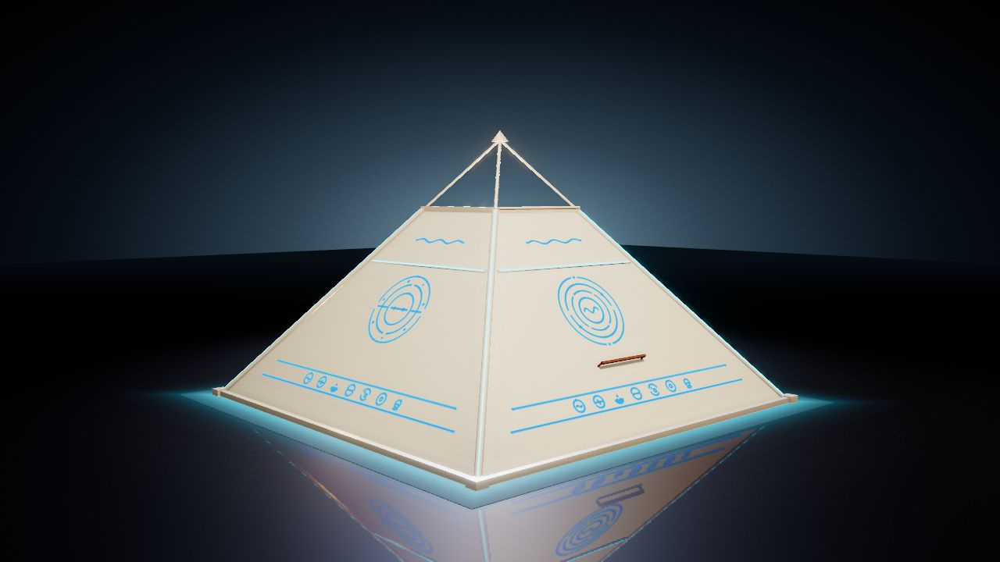
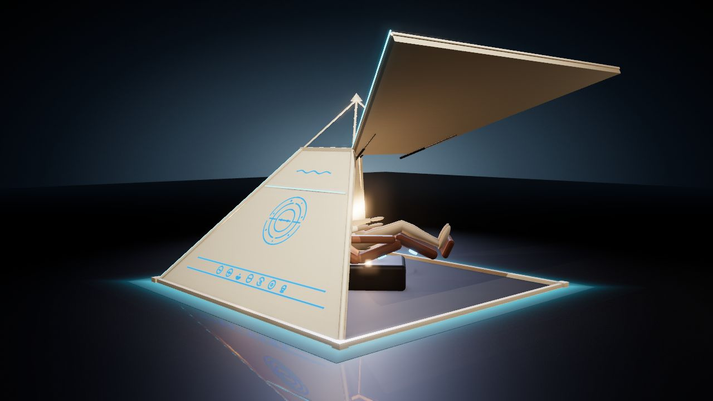

Uma pausa
na estadia.
Possível experiência complementar para hotéis e retiros com proposta de acolhimento e design.

Design de experiência / Protótipo P1
Um espaço individual de relaxamento que reúne design, luz e ambientação em uma presença singular.
01 A experiência
Um ambiente pensado
para um momento só seu.

O ÁPICE propõe uma pausa no ritmo do dia. Sua forma envolve o usuário; a luz dá personalidade ao ambiente.
Uma silhueta reconhecível que se torna parte da identidade do espaço.
Conceito com poltrona reclinável e ambiente reservado para uma pessoa.
Cores e iluminação compõem diferentes sensações visuais de ambientação.
02 Olhe de perto
Clique nas imagens para ampliarMarfim para uma presença suave.
Preto para uma expressão marcante.
Imagens de apresentação do conceito P1. Acabamentos e ambientações ilustram a proposta do produto.
03 O produto, por todos os ângulos
Visualização interativaGire, aproxime e explore
o acabamento marfim.
04 Escala e presença
Referências do protótipo P1Dimensões para visualizar o ÁPICE no ambiente e planejar sua presença.
Medidas de referência do conceito. A implantação depende da avaliação do ambiente e da validação do protótipo.
05 Visão do negócio
Possibilidades a desenvolverO ÁPICE pode ser explorado como uma experiência de relaxamento e ambientação em espaços que valorizam design e atenção individual.
Possível experiência complementar para hotéis e retiros com proposta de acolhimento e design.
Possível integração a spas e espaços dedicados a momentos de relaxamento individual.
Possível aplicação em residências e ambientes privativos que buscam uma peça singular.
O próximo capítulo
A oportunidade está em validar a vivência do produto, desenvolver parcerias e definir seu modelo comercial. O ÁPICE encontra-se na fase de protótipo P1.
Revisitar o produto